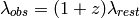

Bases: astropy.modeling.Fittable1DModel
One dimensional redshift model.
| Parameters: | z : float or a list of floats
|
|---|
Notes
Model formula:

Attributes Summary
| input_names | list() -> new empty list |
| param_names | list() -> new empty list |
| z | redshift |
Methods Summary
| eval(*args, **kwargs) | Deprecated since version 1.0. |
| evaluate(x, z) | One dimensional Redshift model function |
| fit_deriv(x, z) | One dimensional Redshift model derivative |
| inverse() | Inverse Redshift model |
Attributes Documentation
redshift
Methods Documentation
Deprecated since version 1.0: The eval method is deprecated and may be removed in a future version. Use Redshift.evaluate instead.
One dimensional Redshift model function
One dimensional Redshift model function
One dimensional Redshift model derivative
Inverse Redshift model